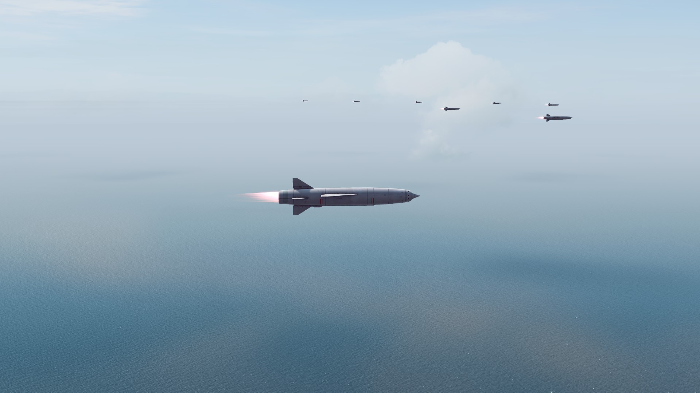
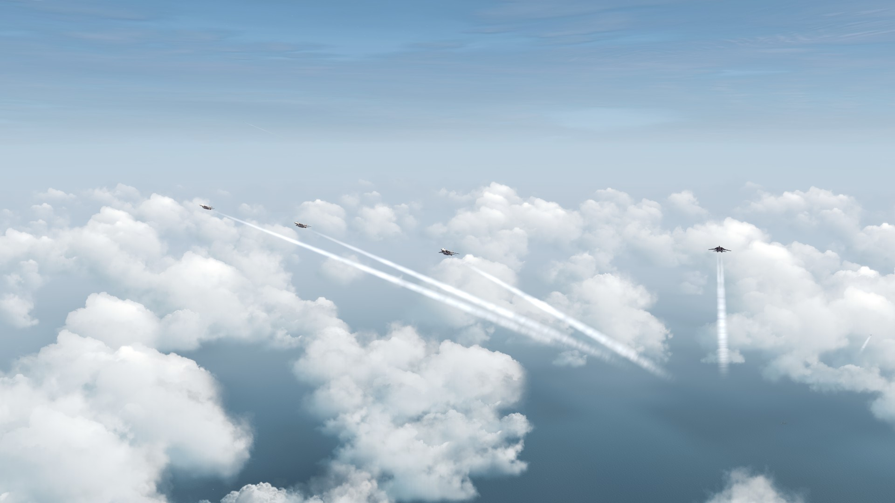

Screenshots


Soviet SS-N-19 missiles flying in formation



US F-14 fighters gaining altitude to intercept hostile aircraft


Gameplay Showcases
Some examples of the types of things you can do in the game, including ship vs ship warfare, carrier operations, and bombarding units on land.
Cinematic Videos
Videos that aren't meant to show off gameplay, but to provide an immersive short story using footage from the game.